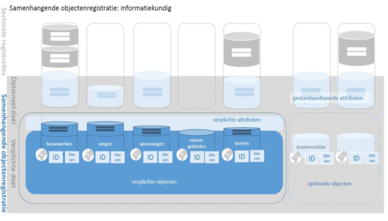
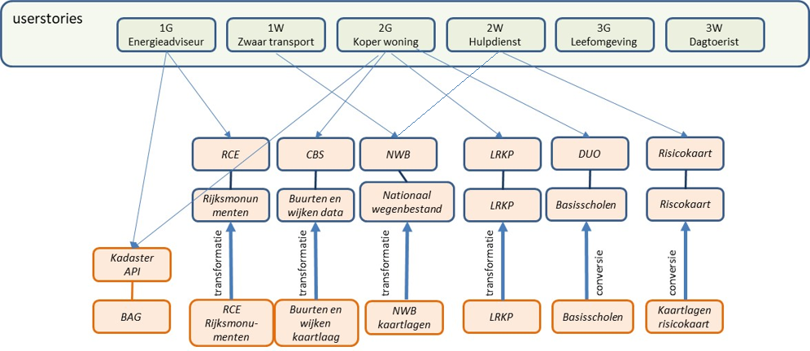
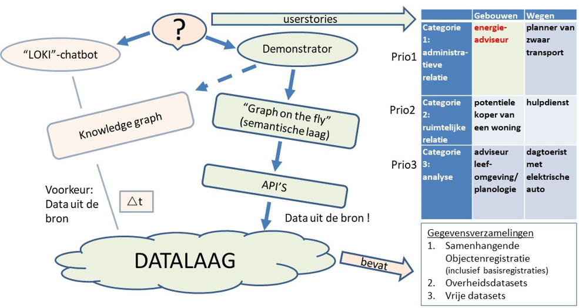

Creative Commons Attribution 4.0 International Public License (CC-BY)
Abstract
This document describes the insights gained during the development of a demonstrator in the context of the Dutch governmental project "Doorontwikkeling in Samenhang" (Continued Development in Cohesion, DiSGeo), concerning the integration of the base registries. With this process, the Ministry of the Interior and Kingdom Relations aims to achieve more coherence in the system of geospatial base registries, with a focus on semantic harmonization of registries and information models, and alternative methods of data exchange and updating (more central, less copying). The aim of this demonstrator was to test and show to a wide audience how geospatial data can be published in cohesion on the web.
Status of This Document
This section describes the status of this document at the time of its publication. Other documents may supersede this document. A list of current Geonovum publications and the latest revision of this document can be found via https://www.geonovum.nl/geo-standaarden/alle-standaarden(in Dutch).
Dit is de definitieve versie van de algemeen. Wijzigingen naar aanleiding van consultaties zijn doorgevoerd.
This is the final version of the Lessons Learned document published following the first phase of the DisGeo demonstrator. It is not an officially consulted standard, but a report written jointly by those involved in the demo. These individuals have all been named as editors or authors of this document.
1. Preface
1.1 Purpose of the demonstrator
The Ministry of the Interior and Kingdom Relations started the project "Doorontwikkeling in Samenhang" (Continued Development in Cohesion, DiSGeo) with the aim to improve the coherence of the system of geospatial base registries, with a focus on semantic harmonization of registries and information models, and alternative methods of data exchange and updating (more central, less copying of data).

After all, users usually do not think in data sets, but in data that is related to each other in various ways. In Dutch geospatial information models (all compliant to NEN3610, the Dutch standard for geo-information) and the system of base registries, data sets have been the principal focus so far. Information models are in a sense silos that only standardize the semantics of a particular sector, but are not modeled in conjunction with the information of other sectors. However, in reality this connection is actually there. Linked data is an extremely suitable technique for capturing this semantic coherence so that the data itself can also be integrated.
Once semantics have been (sufficiently) aligned, the next step is to publish the data in coherence, in a manner that is suitable for wide use. Searchable via search engines, usable for data users - the intermediaries: web/app developers, data scientists, data journalists etc. For end users, the data can be published in a suitable, accessible web viewer.
Geonovum carries out various activities in the context of the further development of the geospatial (base) registries, which are mainly aimed at semantic harmonization. One of these is the development of a demonstrator, showing the semantic connection of data and semantics in geospatial (base) registries using Linked Data for the themes of Buildings and Roads. Development takes place in a github repository.
The aim of this demonstrator is to test and show to a wide audience how geospatial data can be published in an integrated way on the web. The demonstrator shows how additional information can be tied to general base registry objects, using semantic coherence. This allows information to be linked smartly - by recording that the information is, for example, about the same building, regardless of whether the information objects have the same geometry.
1.2 Purpose of this document
During the development of the demonstrator, a lot of experience was gained with data from base registries and other government registries, with APIs and other web services, with semantics and cross-references between datasets. Before the system of government registries can be used and questioned together, there are still many steps to be taken.
The demonstrator's development has yielded valuable insights into issues concerning technology, semantics and governance, which are summarized in this Lessons Learned document. Chapter 2 summarizes the most important insights. Chapter 3 describes the design of the research in which the demonstrator was developed. Finally, Chapter 4 gives the complete overview of the lessons learned.
2. Resume
2.1 APIs are the new silos…
APIs (and in this document we mean more specifically the current REST APIs, as defined in the [NLAPIStrategie]) are intended for asking frequently asked questions or carrying out frequently requested actions on data. They are therefore by definition limited in data model and functionality. This is useful in many cases, because the API is focused on dealing with common questions quickly and easily.
But...
What if you don't have a frequently asked question, but a less common one?
What if the data in the answer doesn't contain the one property you need?
What if the data does not support geospatial questions, while you want to know which other objects are close to an object?
The data in APIs often has no links to data in other APIs. Each API is basically a silo, which is limited to answering questions about a single data set.
2.2 Silos in conjunction?
How do you ask coherent questions across this multitude of silo APIs?
It is possible, as the developed demonstrator shows, to build a semantic layer across multiple APIs, but it requires specific code per API and maintenance for each API change.
We can expect the amount of APIs to become very large. Moreover, there is increasing complexity per added API (no 2 APIs are the same).
2.2.1 Semantic layer
The semantic layer must contain all the knowledge you want to question. If you want to ask a broader question, you first have to add a bit to the semantic layer.
In this case "the whole of knowledge" consists of
base registries
Other government datasets
Free datasets
So… an open world. Describing the whole of knowledge is not possible! The semantic orchestration layer must therefore be expandable.
The semantic layer describes how the data in the system relates to each other. This description contains both the meaning of the data and its coherence with other data, as well as the knowledge about which data is in which API and how you approach that API.
The data definition catalog of the base registries could theoretically be used for this, provided it is integrated with the actual definitions of semantic models such as that of the BAG, which is available as linked data.
2.3 Consistency at data level
The data in APIs often has no links to data in other APIs. This is a problem of the underlying data: the references between individual objects, from different datasets, are still missing.
In order to query the system (via APIs) in conjunction, it is necessary that
References between datasets are created,
APIs can also return identifiers from associated base registries.
For example: asking questions to an NHR API based on a BAG residency object identifier.
Thus, references, links, must be made at the data instance level - from one object to another, where the objects are in different registries.
These links can best be expressed in the form of URIs, in accordance with a national agreement such as the URI strategy [NLURIStrategie]; based on identifiers from the base registries.
Also in APIs links should be expressed in a uniform manner. A rule for this can be included in the API strategy for the Dutch government [NLAPIStrategie].
2.4 Ownership of data
How can you see from an API / the data from an API from whom the data comes?
Due to the lack of a semantic layer [JSON-LD] on most APIs, it is not clear after data retrieval what the data means and who owns it. For questions answered by aggregating results from different APIs, the answer does not identify who owns which part of the answer.
2.5 Governance at the cutting edge
Earlier we wrote that technical agreements have to be made for the creation of references or links at the data instance level, from one object to another, also between objects from different registries.
Apart from the technology, there is also an essential organizational question here:
"Who is responsible for adding and managing the links between datasets?"
These links are a basic condition for coherence. However, this responsibility for creating and managing it is not yet felt and the links have often not yet been added. This can be traced directly to the assignment that the different data owners have, even within organizations. For example, there is no formal link between parcels and buildings, as the relevant departments within Kadaster do not have the task of maintaining this link, and therefore do not have the time and budget available to realize this. The management of these links must therefore be supported with policy, and therefore budget. Although there is already a duty to ensure the correctness of that data when using data from the base registries it is not monitored.
An important element of this governance is that the level at which these links are maintained warrants careful consideration. It is recommended that this be as close as possible to the data owner. For example, let municipalities ensure the correct link between new buildings and cadastral parcels. Although the final data is published by the land registry, the maintenance is then carried out close to the origin of the links.
In addition to the actual creation of the links, the semantic interpretation of this link is also an important subject that must be addressed. The current modeling of data within the own silo provides a certain freedom in modeling. However, when reference is made to data from other registries, governance about the meaning of this reference is also necessary.
There is currently no uniform way to have external data refer to an object in base registries. If, for example, reference is made to a BAG property when publishing a dataset, there is no indication of how this link should be labeled. As a result, it is now difficult with the external dataset to directly understand which dataset they are referring to.
A possible solution for this is a standardized name for the reference, for example, relatedBAGBuilding.
2.6 The 5-Star model for Open Data
A step-by-step plan to address some of the aforementioned issues is the 5 star Open Data model, with each addition of attributes assigned to the published data.
Available on the web, with an open license
Data is machine readable and contains an open license
The dataset is available in an open file format
The above + use open standards of the W3C [JSON-LD] to identify objects in the data so that others can refer to those objects.
The above + link your data to data of others, this creates coherence between data sets.
Considering this, current APIs are no more than 3 star data - the data is available on the web with an open license, is machine-readable, and is available in an open format. The only Dutch open government (geo) data that has four stars is Kadaster Linked Data via PDOK. Five star geospatial data is not there yet!
2.7 Conclusions and recommendations
The starting point of the research was to build a demonstrator on top of APIs. But it turns out there are some problems.
2.7.1 API versus knowledge graph
The majority of open geospatial data is made available as a map layer, which cannot be used as an API. There was only one API that scored well enough on the [maturity checklist](# maturity) to be useful. The rest of the data used in the demonstrator was published in its own API during the project.
Recommendation: Replace the Dutch profiles of WMS 1.3 and WFS 2.0 on the Open Standards List with the new OGC API standards. WFS 2.0 can already be replaced by OGC API - Features. These new OGC API standards ensure a good score on maturity.
Recommendation: Add a checklist API maturity to the [NLAPIStrategie] and make sure that APIs meet this as much as possible.
A set of standalone APIs can be made suitable for coherent querying across the APIs by implementing a semantic orchestration layer on top. This would be easier if we had a set of APIs that score well on maturity. However, this semantic orchestration layer requires a lot of extra code and maintenance. It would be better to have an infrastructure of one or more “knowledge graphs” in which the data is available and queryable in conjunction. The coherence is then regulated in the data layer. In addition, APIs can act as easy access to the data. For the more advanced applications and questions where coherence is essential, the knowledge graph can be directly accessed via SPARQL.
Recommendation: Make sure APIs meet the maturity check. In addition, do not bet fully on APIs alone. To achieve the goals of DisGeo, work towards an infrastructure of one or more “knowledge graphs” (linked data).
2.7.2 Consistency between objects
Data sets are usually not linked in current practice. For example, many registries, instead of a BAG identifier, still contain fields where addresses are included as text. These addresses do not match 100% with the BAG.
In order to be able to query the object registries in a coherent manner, it is a basic condition that the data sets at the level of individual objects are linked together using identifiers. Preferably these are included in the form of URIs.
Recommendation: Arrange governance for the one-time creation and subsequent management of these links - this costs time and money.
Recommendation: Arrange governance over the semantics of the connections.
Recommendation: Establish agreements on the formation and management of URIs in a national URI strategy or broader linked data strategy, based on the [NLURIStrategie] that already provides a starting point for this.
Recommendation: Require APIs to refer to identifiers from the related object registry if those relationships exist. In these cases, have the URIs included in the related object registration in Linked Data.
2.7.3 Best Practices for Data Publication
Internationally, mostly supported by the EU, a lot of work has already been done on drawing up and documenting Best Practices for data publication [DWBP] [SDW-BP], the maturity table in chapter 4 is based on this . The [NLAPIStrategie] also refers explicitly to this. The use of these Best Practices saves a lot of work in setting new standards and agreements.
Recommendation: Copy the available Best Practices into relevant documents.
Recommendation: Take as a starting point in a system of related registries 5 Star Open Data. The absence of the 5th star automatically implies the lack of coherence.
3. Research
3.1 Global architecture
When conducting the research around the demonstrator, a conceptual framework has been defined in which the elaboration of the demonstrator has been tackled.
A number of principles have been identified:
The application layer is completely separate from the data sources.
The data is always accessed via an API. If a data source is not accessible via an API, a copy of the data source that does have an API is created in the demo environment.
A data source ideally has a semantic layer API (JSON-LD). If not, it will not necessarily be solved in the demo environment, but noted as "lesson learned"
If questions are asked about APIs, a provision will be created in an orchestration layer where necessary to serve these questions.
When implementing a user story, at least one object from the base registries is used.
3.2 User Stories
A number of user stories have been defined focusing on the themes of Buildings and Roads. These user stories are divided into three categories with an increase in complexity:
Administrative relationship - Request data about a specific object across a number of data sets.
Spatial relationship - Request data about objects in the vicinity of a specific object.
Analysis - Request data based on multiple variables.
The user stories are described in the table below. They are listed in order of increasing complexity. In the demonstrator's research, these were implemented and the possibilities of current technologies were investigated.
Buildings
Roads
Category 1: administrative relationships
As an energy advisor I want data about e.g. the surface area, age / building year, functions, monumental status, value, maintenance status of a building, so that I can give good advice about making this building more sustainable.
As a planner of heavy transport I want data about e.g. vehicle type, travel direction, clearance height and width, the maximum load, speed and laws and regulations of this part of the road, so that I know whether I can plan my route with this vehicle along this part of the road.
Category 2: spatial relationships
As a potential buyer of a home, I want information about noise pollution, public green spaces, parking spaces, shops, risk objects, schools, coffee shops, so that I know whether the surroundings of this home suit me.
As an emergency service, I want information about (surface) water, schools, childcare locations, vital infrastructure in the vicinity of an incident on public roads with a dangerous substance, so that I know which organizations I should warn.
Category 3: analysis
As an advisor for the living environment / spatial planning, I want information about the accessibility / distance of basic facilities (public transport, schools, shops, health care) in a certain area or relative to the number of households and the age structure, so that I know in which places I have to make which investments.
As a day tourist with an electric car, I want to know where I can charge my car along my route and eat outside and specify my restaurant preferences (for example eating in a monumental building, eating with children) so that I can continue my route fully charged and with new energy.
3.3 Demonstrator
The demonstrator uses the data definition catalog of the base registries of base registries. This describes the relationships between the various objects within the base registries. The demonstrator finds related objects based on SKOS.
Datasets that are not described in the data definition catalog of the base registries are added to a so-called extension. This extension contains the data that is not in the data definition catalog of the base registries, but follows the same structure.
Which objects from the data definition catalog of the base registries are supplied by which API is described in a configuration file. The configuration also describes how to convert the results of an API to [JSON-LD], a semantically rich format. CARML is used for this, developed partly by the Land Registry.
Web services for buildings (residency objects) and roads have been added to the demonstrator. As input to the process, the URI is given for the type as it is in the data definition catalog of the base registries (ie, the semantic definition). This is followed by the relationships to other objects and based on the configuration can be searched from API to API.
Geospatial searching is done in a slightly different but comparable way. Geospatial search creates a circle with a radius of 500 meters at the selected location or based on the location of an object. Geospatial relationships in the extension to the data definition catalog of the base registries determine which objects may be related geographically. This is done on the basis of geof:relate, a [geosparql] property. This prevents all objects within this radius from being searched. Ultimately, this would render the demonstrator unusable. The returned objects are converted into linked data and linked to the start object with a geof:nearby relationship.
3.4 Data sources
A number of data sources have been used for the user stories, which are shown in the picture below:

3.5 Cooperation Land Registry regarding Knowledge Graph
In the context of this investigation, there was also collaboration with Kadaster. Kadaster is innovating and is researching new technologies to query data from Kadaster's data collections. One of those technologies is the development of a knowledge graph, which can be queried by means of a chatbot. Kadaster has developed a knowledge graph for the user story 'energy advisor'.

4. Lessons learned from the DisGeo linked data demonstrator
This chapter describes the lessons learned from the research. While the demonstrator was being developed, we registered the issues we ran into as issues in github. The lessons are listed one by one in this chapter as we came across them. Read for the summary and conclusions [chapter 2](# summary).
4.1 API availability, API usability and API completeness
4.1.1 Availabilty
Initially, the idea at the start of the project was that a wide availability of APIs would ensure a wide availability of data. Combining this data correctly would provide a wealth of information.
However, practice shows that APIs are not (yet) widely available in the Netherlands. The BAG has a well-designed API that offers both relational and geographical data. The BAG API distinguishes itself with this.
4.1.2 Usability
More than 80% of the data used is made available as a map layer (i.e. WMS (T) or WFS old style, or a non-standardized variant of this), which cannot be used as an API. The BAG API is the only API that can be queried geographically.
4.1.3 Completeness
In addition, an API does not necessarily make all data available. For example, the BAG API does not make the function of a residence object available through the API.
4.1.4 Maturity
Many APIs do not score well on (all) of these points:
4.1.4.1 Checklist API Maturity
#
Question
Referral API Strategy
Reference (Spatial) Data on the Web Best Practices
4.1.5 Considerations for follow-up and API strategy
The current [apply-or-explain-list-list](https://www.forumstandaardisatie.nl/open-standaarden/lijst/ver obligation) of Forum Standardization now contains the Dutch profiles of WMS 1.3 and WFS 2.0 . This "obligation" stands in the way of further development. The solution lies in replacing these standards on the Open Standards List with the new OGC API standards. WFS 2.0 can already be replaced by OGC API - Features. These new OGC API standards ensure a good score on maturity.
The checklist for API maturity would be a good addition to the Dutch API strategy [NLAPIStrategie].
4.2 APIs and data silos
Certain data is returned based on an API query. In a system of data that is to be used in conjunction, it is necessary that the data make references to other objects based on a unique and persistent identifier. Based on this principle, we can come up with a generic solution.
One observation with regard to APIs seems to be that, at least in the APIs we have examined, an API can be seen as a data silo. The API shares data from one silo and usually does not contain any relationships to data (or a dataset) outside the API.
It seems common, that if an API offers multiple requests, the response from one request refers to another request within the same API. For example, the data about a residence object refers to the request within the same API to request associated property data.
This is useful on the one hand, but if you want to query a different registration on the basis of the BAG Building id obtained, in order to retrieve more information about that property, you as a programmer must obtain the id from the API URL by parsing it, which requires knowledge of the specific URL structure of this API. It is not possible to generically obtain an ID from a URL.
Moreover, in order to query the system in conjunction via APIs, an API must also be able to answer questions based on identifiers from other related data sets.
4.2.1 Underlying problem: missing connections in the data
Of course, an API cannot offer more than the data source it provides. If the source data contains no links between objects from this dataset and objects from other datasets, then the API cannot provide such connections.
The underlying problem is therefore that the datasets do not record and manage these links structurally. If datasets did, the APIs on top of them could be improved to offer links between individual objects and make them searchable in a useful way.
4.2.2 Considerations for follow-up or inclusion in API strategy
In order to make data from the data silo available in conjunction, reference should be made to identifiers. This allows generic handling of data from different APIs.
In addition, APIs should refer to identifiers of objects from other APIs. For example, the data from the National Cultural Heritage Agency (RCE) describes addresses on monuments, but these have been literally introduced instead of linked to the BAG and are therefore difficult to compare. This involves gross margins of error. Ideally, the RCE API should (also) refer to an address identifier available within the BAG.
In order to query the system and related data collections in conjunction, APIs must refer to identifiers from the related object registry if those relationships exist. This is a problem that originates from the underlying data, the API is only an access to this.
It must also be clear what the meaning of that relationship is. Sometimes, for example, an address is linked to an object for findability, while in that object several residential objects with addresses can occur. It cannot be concluded from this that only that one address is relevant.
Organizing (establishing and managing) those relationships requires governance and budget!
4.3 One and two-sided references and deviations
Data models impose limitations. For example, the BAG data model records that a residential object refers to a property (e.g. a building or building part), but a property does not refer to a residential object. However, the API does do this and therefore deviates from the data model. This makes the use of an API very specific.
4.3.1 Considerations for next steps
A relationship between two objects must always be retrievable in two directions.
The semantic model must be so robust that any orchestration layer across APIs is kept as compact as possible.
4.4 Structure of the API result
An API can return results in a structure that is different if the results are different. A concrete example of this is that if the result contains one instance, it is returned directly in the results, while a result with multiple instances is bundled by the same API in, for example, a JSON array. This creates a different structure.
Normally this is not necessarily a problem, but it was problematic when building the demonstrator. The results of an API are converted to a semantic format. This is done by means of a mapping. How the instances are bundled, i.e. how the result of an API is structured, must be processed in the mapping, otherwise it cannot be executed properly. If this structure can differ, this means a more extensive mapping.
4.4.1 Consideration for follow-up or inclusion in API strategy
It may be considered to include in the API strategy that an answer that may contain one or more results is always bundled, even if a specific question only yields one result. This keeps the semantic orchestration layer small and compact.
4.5 Address details incomparable
Address data is in theory a promising linking pin for relating objects to each other, but this often proves difficult in practice. Address data is often used in the various data sets used in the demonstrator, but these are difficult to compare. Assuming that Kadaster uses the most complex model on address data (the BAG), this also seems to be the most accurate and therefore the most useful. An address consists of a number of facets (city, street, house number, house letter, addition). However, a large part of the datasets / APIs handle this data interchangeably. This makes it difficult to compare address data.
4.5.1 Consideration for next steps
In order to be able to query the system and related data collections in conjunction, objects in data sets must refer to identifiers from the related object registration if those relationships exist. Relationships based on descriptive elements such as a typed address should be excluded.
4.6 data definition catalog of the base registries not related to source
To discover the semantic relationship between the data of the different APIs, it is necessary to define in the semantic orchestration layer how data relates to each other. This is well done by the already existing data definition catalog of the base registries.
Some of the data from base registries is also already available as semantic data at the source, i.e. Linked Data, including a semantic model. However, there is no relationship between the elements of the semantic model at the source and the equivalent elements in the data definition catalog of the base registries. This makes it impossible to use the already existing data definition catalog of the base registries as the basis for the orchestration layer and to request the already available semantic data and add it to the demonstrator. If this semantic 'bridge' between the data definition catalog of the base registries and already published semantic data had already been present, this could have considerably simplified the building of the demonstrator.
4.6.1 Consideration for next steps
The semantic relations of the coherent object registration (successor to the data definition catalog of the base registries, at least for the geo-base registries) must always be related to the semantic model of the data sets. This is a relatively easy step to take to help keep the orchestration layer compact and manageable.
4.7 What if data comes from multiple sources?
During the development of the DisGeo demonstrator, it was assumed that data about one object is provided by a single API. Data about a residence object will always come from the land registry. When this assumption becomes invalid, the problem arises that it is almost impossible to find out where a specific object has to be requested.
4.7.1 Consideration for next steps
Base registry data should only be retrieved from the related object registration. This remains a general rule!
4.8 Origin of data
In no case does an API provide metadata about the object. It is therefore impossible to validate the origin, timeliness, accuracy and reliability of data.
4.8.1 Considerations for follow-up or inclusion in API strategy
It must be investigated whether APIs can be made suitable for this.
Linked data offers good opportunities for this.
4.9 Configuration load
In order to be able to relate the APIs to each other, to convert the results of an API into a semantic format and to describe the API configuration, a huge configuration load is unavoidable. The limited APIs currently require more than 4000 rules of configuration. Maintenance of this configuration will also incur a significant burden.
We can expect the amount of APIs to become very large. In addition, there is increasing complexity per added API (no two APIs are the same).
Another drawback is that a semantic layer that you build in this way contains your own interpretation: after all, the semantics of the data in the API itself is often unknown, because it is not published.
The semantic layer must contain all the knowledge you want to question. This layer describes how the data in the system relates to each other; this is linked to which data is contained in which API. If you want to ask a broader question than the semantic layer covers, you must first add a piece to the semantic layer.
“The whole of knowledge” in this case consists of
Base registrations
Other government datasets
Open datasets
So ... an open world. Describing the whole of knowledge is not possible! The semantic orchestration layer must therefore be expandable.
4.9.1 Considerations for next steps
This strenghens the argument for keeping the orchestration layer as compact as possible.
The orchestration layer must be expandable.
Linked data makes having an orchestration layer largely or completely unnecessary. Long term, this is the better option.
4.10 Geospatial querying is characterized by missing relationship (and what to look for)
For questions with a geospatial component, the demonstrator searches for objects that have no administrative relationship to each other: these objects must be within a certain radius of each other. This would be possible on all objects defined in the data definition catalog of the base registries, whose defined API supports geospatial queries.
However, with a growing number of APIs, this would put a significant burden on performance. Requesting all properties within a certain radius, for example, also potentially yields a great deal of data, which in many cases is unlikely to answer the user's question. At this time, it has been decided to define in the configuration which specific object types must be considered in a geospatial query from a specific starting object. This allows control to take place.
4.10.1 Considerations for next steps
Further research is needed into the balance between being able to search for everything and keeping the number of results manageable.
Possible solutions include built-in targeted search patterns, filters or other ways to channel the number of search directions.
4.11 Geospatial relationship based on GeoSPARQl
Geospatial data can easily be used in conjunction. Geographic data is in all cases offered in a geo-standard in the context of this demonstrator. This allows various tools and software libraries to easily handle geographic data. Tools that work semantically can also handle this data well because semantic (i.e. linked data-based) geostandards such as GeoSPARQL[geosparql] have been applied.
GeoSPARQL is an OGC standard that describes an extension of SPARQL [rdf-sparql-query], the default query language for Linked Data. GeoSPARQL also defines a basic vocabulary for geospatial data and can be used to indicate that an object is a geospatial object and to establish topological relationships between geospatial objects.
4.11.1 Consideration for next steps
That geographic data is provided in a geo standard is valuable, continue this way.
Use GeoSPARQL when offering geospatial data as linked data.
In order for the geospatial base registers to function in conjunction, it is necessary to progress to Linked Data. The growth path to this must be mapped out.